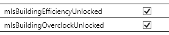

Hello,
after installing from Mod´s Overlocking is not more possible.
Can Anybody help?
The Mods work perfect.

Hello,
after installing from Mod´s Overlocking is not more possible.
Can Anybody help?
The Mods work perfect.
Which mods do you have installed? And what do you mean you can’t overclock anymore? You can’t turn up the overclock or place in the item anymore?
@Vilsol Thank you for your fast Answer;
I have installed the following Mod´s (please see the picture)
I can not place the item anymore (please see the picture)…
We’re not aware of any mods that affect overclocking like this, but in the mean time, you should be able to use a save editor such as this one to manually re-enable overclocking.
Open up your save and press File > Jump to tag ... and enter BP_GameState.BP_GameState_C. If for some reason the jump fails to take you there, you can manually navigate to it at /Game/FactoryGame/-Shared/Blueprint/BP_GameState.BP_GameState_C. Look for the properties mIsBuildingEfficiencyUnlocked and mIsBuildingOverclockUnlocked in Persistent_Level:PersistentLevel.BP_GameState_C_0 and check both of them. After saving your changes and loading up the save ingame, you should have access to the overclocking panel again.

Hello budak7273,
Thank you for your answer.
I downloded the save Editor Version Version 0.8.1.zip
and i opend the Save File, I only can find one of the two, the second checkbox is missing.
I hope you can help
Update:
If i open an older Save Game in the Save Game Editor the second Checkbox is avalible.
If i open the older Save Game in Satisfactory the Overlocking is immediately closed.
It seems that one of the mods is somehow removing overclocking for some reason. I will message the devs to see who is breaking this.
@Enrico_Setzer Could you please show a screenshot of your Paks directory?
Hello Vilsol,
here is the screenshot from my Paks directory.
I think the Problem must be since i installed the first Mod´s (see Post number 3)
Can you try backing up your save, deleting all the mods, and adding the mIsBuildingOverclockUnlocked manually? Then slowly start adding mods one by one to see which one breaks it.
Well i loaded Save Editor and could also only find one of the files? Checked it and it still didn’t work.
also noticed i don’t have the ability to use map function anymore, I hope i don’t have to remove the game and start from day one again!
I deleated all the mods… and startet the game, but i wasn´t able to use the overclocking, the same Problem as before, in very old saves i can use it.
I can not add " mIsBuildingOverclockUnlocked" because I can´t open the Save file´s in the Save Editor which have the Problems with the Overlocking.
What error are you getting when opening the save?
Does the editor have issues opening large files, I started a new game and played for a few hours then opened in Save Editor but didn’t really have anything unlocked so it didn’t show up. Although everything was also Locked out in new game save too. I tried opening my newest save on my modded map and it says please wait? Left and went out for Dinner, 3 hours later still says please wait.
Could you please send your save that you are unable to open with the save editor?
I get no Error… The Save Editor is showing Loading Please Wait…
UPDATE:
After the New Savegame Editor was realesd, i can open my Save file and added manually:
mIsBuildingEfficiencyUnlockedandmIsBuildingOverclockUnlocked`


{kind=link}